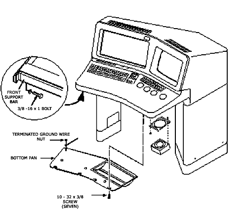

To access the trackball:
Remove seven 10-32 by 3/8 screws, which secure the bottom pan to the console. Refer to Illustration 1.
Set the bottom pan on the floor. The ground wire is still connected and should be long enough to allow the pan to rest on the floor. If not, disconnect ground wire from the bottom pan.
To remove the trackball disconnect one cable and four screws.
Illustration 1: Accessing the Console Trackball
